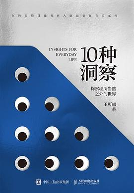

《10种洞察：探索理所当然之外的世界》

总体观点
现代人在高度程式化的社会分工与算法推荐中，极易陷入'理所当然'的认知茧房，将习以为常的惯性当成客观真理，丧失了对真实生活肌理的敏感与质疑能力。
洞察不是神来之笔的灵感闪现，而是一套可习得、可训练的观察与思考框架。通过细节、盲区、异常、隐喻、冲突等十个多维棱镜，能够穿透表象诉求，挖掘用户与社会隐藏的真实动机。
真正的创新往往发生于边缘地带与异常离群值之中。学会倾听非主流群体的痛点与微弱信号，重构问题的预设前提，才能在同质化严重的竞争红海中开辟出全新的认知视界。
核心观点
-
1. 细节还原：在微末动作中捕获真实心理
最深刻的用户需求往往隐藏在最不起眼的下意识微动作与犹豫停顿中，而不是在精心编排的问卷报告里。
蹲点观察银行ATM机前老年人手部抓握钱包与老花镜的慌乱动作，倒逼出大字界面与实体物理扶手的温情改良。 -
2. 离群值启发：极端用户定义创新前沿
平均数抹平了个性与可能性，而边缘极端用户的笨拙用法与自行改造才是产品突破性演进的灯塔。
厨房用具品牌OXO通过观察罹患严重关节炎的老奶奶切土豆的痛苦姿态，设计出全员通用的宽握把削皮刀。 -
3. 命题重构：换一种提问打破思维死锁
当在原有框架下苦苦寻觅最优解时，往往是问题本身的预设限制了想象力，重新定义问题才是高阶创新。
老旧写字楼电梯拥堵投诉，工程师提议更换昂贵高速电机，而心理学家在电梯间装上全身镜彻底消除等待焦躁。 -
4. 具身感知：用身体体验穿透抽象概念
商业概念可以被包装粉饰，但身体的疲惫、痛感与生理直觉永远不会说谎，回归物理交互才见真章。
实体书店在入口处保留真实纸张木浆清香与实木长凳的冰凉触感，成功抵御数字阅读器同质化竞争。 -
5. 隐喻迁移：跨界映射击穿行业壁垒
把一个领域的成熟模式隐喻化移植到完全陌生的行业，常常能产生降维打击般的惊喜与思维破局。
将现代医院重症监护室的嘈杂报警声类比为潜水艇声呐报警，重新设计柔和提示音有效降低了医患应激反应。
全书思维导图 · 知识脉络树
全书结构
-
引言：理所当然的日常与被遮蔽的可能
阐明习惯性认知对人类创造力与感受力的钝化效应，界定洞察与普通日常观察的本质分野。
分析人们每天经过路口早餐摊却视而不见，直到摊主自制了收纳挂袋才被设计师偶然发现的故事。 -
洞察 01：细节洞察——从微末处看见系统全貌
剖析如何通过放大镜式的人类学田野观察，在日常微动作和微表情中捕获真实心理需求。
观察超市推车在拐弯处轮轴卡顿引发顾客皱眉的瞬间，改进轮系转弯半径极大提升了客单价与流转率。 -
洞察 02：盲区洞察——照亮习惯性忽略的幽暗角落
揭示组织运作与生活日常中视而不见的结构性死角，探讨盲区的成因与打捞策略。
企业每年高薪激励销售冠军，却长期忽视后台客服部门默默承受的海量退单暴躁情绪与流失隐患。 -
洞察 03：异常洞察——在离群值与反常行为中发现先机
摆脱对平均统计数的依赖，聚焦行为异常、极客或特殊需求人群带来的颠覆式启发。
运动品牌深入研究残疾人轮椅竞速选手的特殊掌部受力，衍生出针对专业马拉松选手的抗磨掌心手套。 -
洞察 04：隐喻洞察——借助跨领域映射击穿认知惯性
利用符号学与诗意隐喻，在两个看似毫无关联的事物之间建立神经元连接，激发跨界创新。
把复杂严肃的个人养老金理财产品理解为给未来的自己寄慢递包裹，大幅拉近了与年轻客群的心理距离。 -
洞察 05：冲突洞察——捕捉表面和谐之下的利益撕裂
透过表面的礼貌协议与客套话，识别不同角色间在权力、时间和利益分配上的隐秘角力。
在家庭智能家电推广中，表面是丈夫热衷科技购买，深层则是妻子对复杂APP繁琐操作与家务归属的抗拒。 -
洞察 06：边缘洞察——向亚文化与极端用户借智
走出核心主流舒适圈，到跑酷青年、盲盒收藏者、二次元等亚文化部落中打捞未来潮流的微弱信号。
户外机能服饰品牌从城市涂鸦滑板少年的耐磨口袋改造中，提取出风靡全球的城市机能风廓形设计。 -
洞察 07：情绪洞察——穿透理性言辞直击深层情感诉求
解析人言不由衷的心理机制，学会绕过理性的防御面具，捕捉羞耻、孤独与自尊等情绪底层。
针对单身白领速食产品的包装，去掉一人食孤独餐等怜悯字样，代之以精致犒赏的情绪认同。 -
洞察 08：身体洞察——回归具身认知与物理交互真实体验
警惕纯数字界面的抽象化欺骗，重新重视触觉、重力、肌肉记忆等身体维度的真实反馈。
新能源汽车中控保留几个极具阻尼感与咔哒机械声的实体旋钮，成功缓解了驾驶员盲操时的焦虑与失误。 -
洞察 09：重构洞察——颠覆问题预设重新定义核心命题
展示如何打破既定命题的陷阱，从如何把传统流程做得更快转向如何让参与过程产生全新的愉悦价值。
机场行李提取处将漫长的行李传送带设计成城市名胜模型展览台，化枯燥等待为旅程的欢快第一站。 -
洞察 10：未来洞察——由微弱信号预判潮水的方向
将多维度的离散线索编织成趋势图谱，学会在弱信号萌芽期做出前瞻性预判与战略布局。
结合老龄化微缩家庭、银发族短视频点赞数据与独居宠物喂养趋势，推演银发陪伴消费市场的爆发拐点。 -
结语：培养终身敏锐的观察之眼
总结设计思维的终极目标不是制造花哨产品，而是唤醒对生活本身的敬畏、关怀与好奇。
作者分享重拾笔记本随身速记的习惯，在日常散步中重新感受普通街道的生命跃动与平凡诗意。